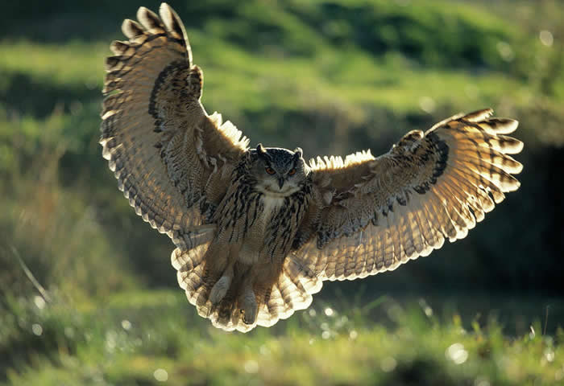
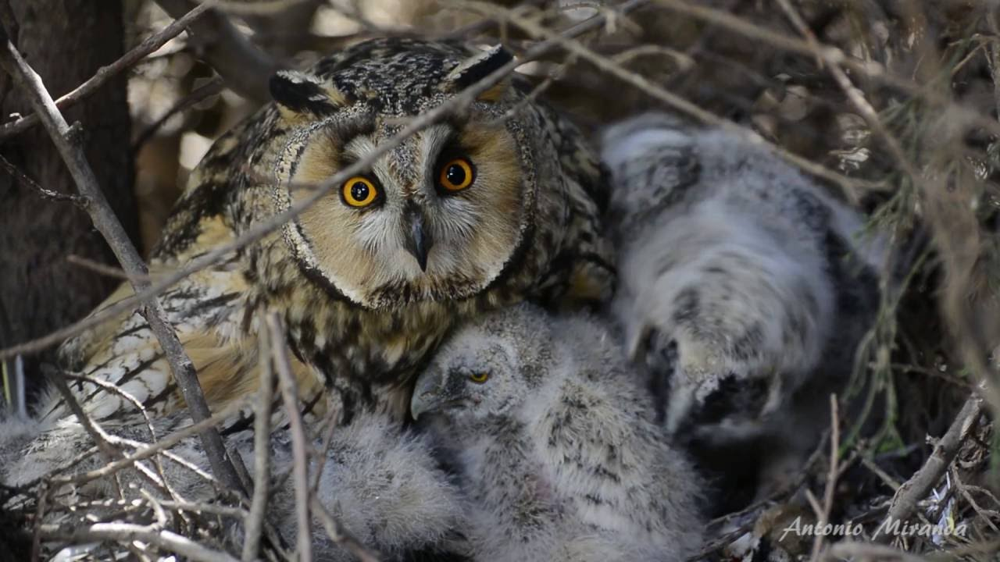
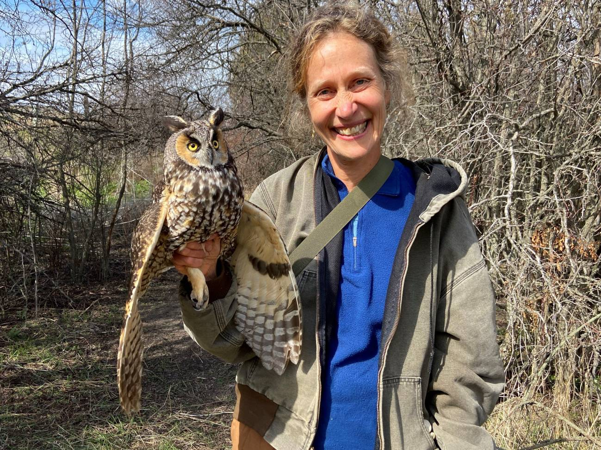

Bienvenido a nuestra página web dedicada a la fascinante figura del búho, una criatura enigmática que ha cautivado la imaginación humana desde tiempos inmemoriales. A lo largo de la historia, el búho ha sido asociado con la sabiduría, la perspicacia, la intuición y la magia, convirtiéndolo en un símbolo poderoso y omnipresente en diversas culturas y mitologías.
| Especie | Hábitat | Distribución |
| Búho real euroasiático | Bosques templados y boreales | Europa, Asia y norte de África |
| Búho pescador | Ambientes acuáticos | Norte de Asia y América del Norte |
| Búho nival | Tundra ártica | Ártico |
Los búhos se encuentran en todos los continentes excepto en la Antártida, habitando una amplia variedad de ecosistemas, desde densos bosques tropicales hasta áridas sabanas y montañas nevadas. Su distribución global abarca más de 250 especies, cada una con adaptaciones únicas al entorno específico en el que habita.
Los búhos son aves monógamas y forman parejas duraderas que pueden permanecer juntas durante toda su vida. La temporada de reproducción varía según la especie y la ubicación geográfica, pero generalmente ocurre en primavera o principios del verano. Las hembras ponen de 2 a 4 huevos en nidos construidos en cavidades de árboles, grietas en rocas o estructuras artificiales. Los huevos eclosionan después de 24 a 36 días, y los los polluelos nacen indefensos.
El estado de los búhos varía: algunas especies abundan, otras están en peligro. Las principales amenazas son la pérdida de hábitat, la persecución, el envenenamiento y el cambio climático. Existen esfuerzos de conservación como la protección del hábitat, la educación y la investigación. El futuro de los búhos depende de nuestra capacidad para protegerlos.
{kind=link}